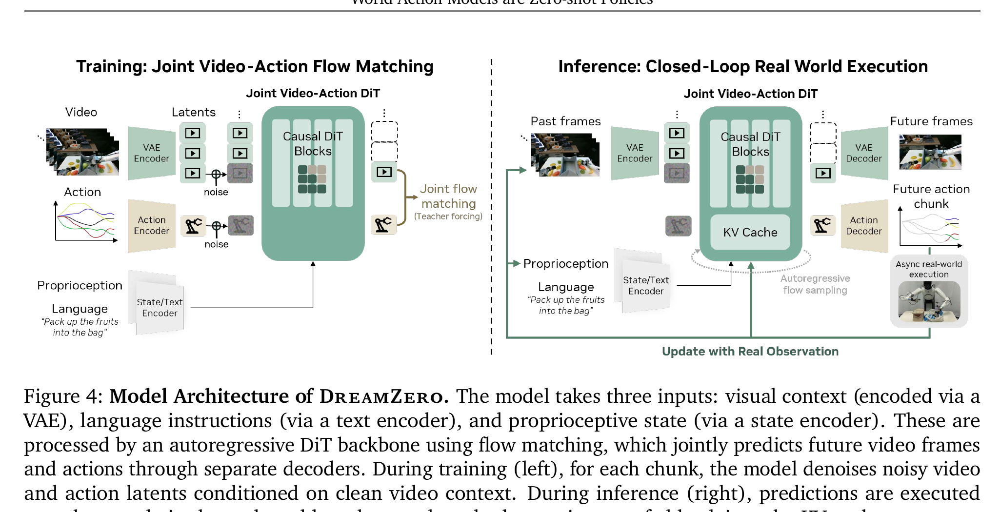

World Action Models are Zero-shot Policies
Ye 等 · DreamZero · 2026 技术报告 · arXiv:2602.15922 · Zotero V2A8TRBG
DreamZero 把 14B 预训练视频扩散模型改造成因果 World Action Model：每个 chunk 用同一个 flow-matching 目标联合去噪未来视频 latent 和动作 latent，执行后用真实观测替换 KV cache 中的预测帧，以跨场景、物体和任务做 zero-shot 控制。
§1 Introduction：为什么 VLA 懂任务语义，却仍可能不会执行陌生动作
VLA 从 VLM 继承强语义：它可能认识新物体、理解新指令，却缺少“动作怎样在空间中展开”的连续表示。因而它能理解“旋转、系、倒、插”等动词，却可能只在训练动作分布附近做近似模仿。要覆盖新运动，继续逐任务采集密集机器人示范既昂贵，也无法利用网络视频里丰富的人类交互。
DreamZero 从 14B 预训练视频 diffusion backbone 出发，联合生成未来视频和连续动作。视频分支提供世界物理、运动形状和跨本体演示，动作分支把这些预测接地为机器人控制。论文所谓 zero-shot，是在既有机器人训练和视频先验基础上，对未见任务、未见物体组合或未见运动直接执行；并非模型从未接触机器人数据。
展开原文 · 核心命题
“predict both actions and visual future states in an aligned manner”
§2 Related Work：从 VLA 语义迁移到 WAM 运动迁移
RT-2、OpenVLA 等把图文语义迁移到动作，擅长物体和语言组合；PAD、UWM、UVA 等 joint WAM 通过未来预测增强策略，但通常仍强调样本效率或已定义任务上的性能。DreamZero 把重点推进到 motion-level zero-shot generalization，并将性能与视频 backbone 规模、生成质量和视频—动作对齐联系起来。
它也延续 chunk-wise diffusion/flow matching 的控制路线，但采用 causal/autoregressive video-action chunk 与 teacher forcing 训练长序列。跨本体部分利用人类或其他机器人 video-only demonstration，不把外部动作空间强行映射进目标机器人；这些视频只通过视觉未来改变共享先验。
§3 “WAM 是 zero-shot policy”意味着什么
- Video prior
- web-scale 预训练带来对象、场景与动作语义的泛化。
- Robot grounding
- 机器人数据教模型把视觉转移映射为具体动作。
- Zero-shot
- 指未对目标任务额外收集示范/微调即可执行；不等于完全没见过相似语义或机器人数据。
§4 训练和现实执行是一套因果结构

1. 压缩视觉、动作和状态
视频 latent 与动作 latent 被加上匹配的 flow noise。
输入是什么：随机噪声，以及当前画面、语言指令或机器人状态等条件信息。噪声只是生成过程的起点，不是机器人真的要执行的动作。
这一步究竟做什么：本步骤执行“压缩视觉、动作和状态”。具体来说，视频 latent 与动作 latent 被加上匹配的 flow noise。 这个动作会真正改变环境，所以系统还要读取执行后的新观测，检查模型预期与现实之间的差距。
输出到哪里：一组比原始输入更紧凑的内部特征；它不是最终动作或画面。这个结果会交给下一步“联合预测下一 chunk”继续处理。
为什么不能省略：模型不能高效地直接在所有原始像素和长序列上推理；这一步把信息压成后续模块能处理、比较和复用的形式。
2. 联合预测下一 chunk
共享时间步和 teacher forcing 强化视频—动作对齐。
输入是什么：来自上一步“压缩视觉、动作和状态”的产物：一组比原始输入更紧凑的内部特征；它不是最终动作或画面。本步骤还会按论文设置读取当前条件、时间步或训练信号。
这一步究竟做什么：本步骤执行“联合预测下一 chunk”。具体来说，共享时间步和 teacher forcing 强化视频—动作对齐。 模型从相同起点产生候选未来，后续模块再检查这些未来是否符合条件、物理规律或动作需要。
输出到哪里：一个或多个候选未来、动作或轨迹，以及必要的中间状态。这个结果会交给下一步“保留历史上下文”继续处理。
为什么不能省略：它承担上下两步之间的接口；缺少它，前一步产生的信息无法以正确格式或正确含义传到下一步。
3. 保留历史上下文
因果 KV cache 支持长序列而无需双向重算。
输入是什么：来自上一步“联合预测下一 chunk”的产物：一个或多个候选未来、动作或轨迹，以及必要的中间状态。本步骤还会按论文设置读取当前条件、时间步或训练信号。
这一步究竟做什么：本步骤执行“保留历史上下文”。具体来说，因果 KV cache 支持长序列而无需双向重算。 这里处理的只是整条链路中的一个接口：把上一步的结果整理成下一步能够正确读取和继续计算的形式。
输出到哪里：经过本步骤处理、含义更明确的中间结果。这个结果会交给下一步“异步执行并写回现实”继续处理。
为什么不能省略：它承担上下两步之间的接口；缺少它，前一步产生的信息无法以正确格式或正确含义传到下一步。
4. 异步执行并写回现实
真实观测替换预测帧，下一轮从现实而非幻觉继续。
输入是什么：来自上一步“保留历史上下文”的产物：经过本步骤处理、含义更明确的中间结果。本步骤还会按论文设置读取当前条件、时间步或训练信号。
这一步究竟做什么：本步骤执行“异步执行并写回现实”。具体来说，真实观测替换预测帧，下一轮从现实而非幻觉继续。 模型从相同起点产生候选未来，后续模块再检查这些未来是否符合条件、物理规律或动作需要。
输出到哪里：可发送给机器人控制器的动作，以及执行后重新观测到的真实状态。这是图中这条链路的最终产物，随后会进入真实执行、模型更新或指标评测。
为什么不能省略：机器人动作会改变下一次观测；只有执行后重新读取现实，才能发现预测误差并阻止错误连续累积。
§5 Chunk-wise flow matching + teacher forcing
- $\epsilon$ 与 $x_1$
- 高斯起点和真实训练目标；$x_1$ 可包含动作与未来视觉 latent。
- $x_s$
- 时间 $s$ 的线性插值状态，训练时可直接采样而无需先跑完整生成轨迹。
- $x_1-\epsilon$
- 直线路径的目标速度。
- $\mathrm{context}$
- 当前观测、语言与历史条件，决定同一个噪声样本应被送往哪一种可执行未来。
视频与动作共享 denoising timestep；当前 chunk 被加噪，前一 chunk 保持干净作为 teacher-forcing 条件。视频才做跨 chunk 自回归，动作每轮从视觉变化中解码，避免把旧的动作预测误差继续喂回去。
§6 为什么能到实时闭环
§7 如何正确读“zero-shot”
§8 实验归因与复现：怎样正确验证“zero-shot policy”
最小可信复现清单
- 公开训练/测试任务 ontology，说明 unseen verb 与 unseen motion 的判定。
- 列出机器人数据和 video-only 跨本体数据是否包含相似轨迹。
- 报告 chunk 长度、teacher-forcing 上下文与 rollout 时历史更新方式。
- 给出视频和动作去噪步数、缓存策略、并行流水线及 7Hz 测量硬件。
- 用无视频预训练、冻结视频 backbone、打乱视频—动作配对等对照。
DreamZero 把 WAM 的价值定义为运动泛化；“zero-shot”是否成立，取决于严格任务拆分和视频—动作对齐证据，而不只是一组成功视频。